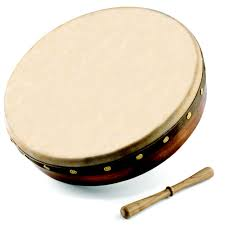
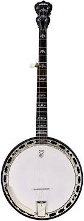
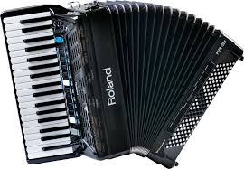
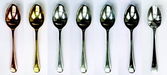

Irish Traditional Music - Instruments used
Some of the instruments include:
- Bonhran
- Banjo
- Piano Accordion
- Uillean Pipes
- Spoons
- Harp
Bodhran:
The Bodhran is a percussion Irish instrument. Also known as the heartbeat, the Bodhran typically is played in a particular rhythm to keep the strongbeat of the song going. It is an instrument that has goat skin stretched across one side and has the other side hallow. It is pronounced "bow-rawn" and is played with an stick object known as Cipen, Tripper or Beater or using the hand. Some of the famous performers who have played are Christy Moore, Caroline and Junior Davey. Despite being only the rhythm, in modern society the background is just as important as all the others factors, like harmony, meaning the bodhran still has a long life.
Banjo:
The Banjo is an mutiply stringed instrument that orignated from the continents of the African continents. After a few generations, the americans took the africans as slaves. It got to Britain and through britain, it has arrived at Ireland. The standard version of the banjo in folk music is the four stringed version. It's standard tuning is set at E - A - D - G with the E string being the lowest tuning. It is played using picking melodies at usually a single tone (Using a plectrum). It can played an rhythm accompanient, but other performers usually play accompanient. The Banjo also has a kettle drum in the belly of the instrument, giving the sound unique to the instrument itself. One of the most famous banjo performer is Gerry O'Conner.
Piano Accordion:
The Piano Accordion was invented in Germany by Friedrich Buschmann and is very silmilar to the piano, where the button looks like piano keys. It is a melsdon instrument, where it had a single row of buttons to play. It is a a woodwind instrument, as the instrument has a reed inside it. Because it has buttons, it can play both harmonies and melodies, also can be an accompanient to any other instrument. This flexible instrument is a popular instrument in folk music. Dermot O'Brien is a performer who can play this instrument.
Uillean Pipes
The direct translation of Uillean is uille meaning Elbow. By eighteenth century these instruments were replacing the harp as the most popular instrument for entertainment. The instrument consist of bellows, bags, chanter, drones and regulations. The chanter is the double reed part, where the air goes in to feed the musical part of the piper. The chanter also consist of seven holes in the front part and one in the part, which is common to a lot of woodwind instruments. Piping started to dye as a result of the great famine. So pipiing competitions kept it alive to the modern. There are three versions of the drone - bass, tenor and baritone. to name a few performers, such as Liam O'Flynn, Paddy Maloney and Paddy Keenan.

Bones and Spoons
Bones have be used to create a quick rhythm that other instruments cannot reach. They are only used for rhythm purposes, but they can created an syncopated rhythm on top of another percussion, such as Bonhran. Since they are quite simple in comparison to other instruments, they are among the first one we pick up and dispatch quickly. Spoons are performed in the same way, which would be surprizing to some people. One performer of this instrument is Mel Mercier.
Harp
The Harp has always been part of the Irish tradition for as long has the Irish has been able to record, write and of course speak. They all have a triangular style to them, and have been around since the 8th century. The oldest harp that still exist is in trinty college and is called the Brin Born Harp. It has existed since the fifteenth century. This harp woulb be played with fingernails, has 29 steel strings and gives a bell like sound as it rings. This playing style would have completely dide out if the Belfast Harp Festival did not gather harpers to compete. Only one harper arrived that played in the old fashioned style. The music was recorded at the festival, which perserved the music. The new harp, also known as the Neo Harp is smaller, has nylon strings, more strings and is played with fingertips.